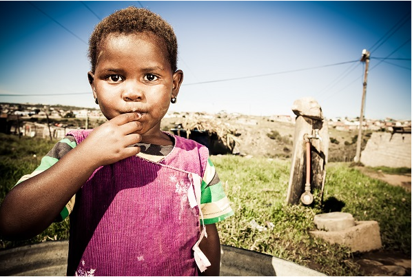

Who We Are

Vision Mentors is a charitable organization who will build homeless children shelters in each of the countries we work in. This shelter will house youth for up to 6 weeks, during which time we will assist them in being adopted, fostered, or placed in a job, depending on their age. For children (under 15), they may remain in the shelter for up to 3 months. The shelter will also serve as a food pantry for those residing in it and for those in nearby communities. We will also rent an office space which will double as a community center/food pantry.
Food pantries will be open seven days a week and stocked by farms we help develop. These pantries will also have a soup kitchen component where locals may receive one hot meal (soup, etc) or a sandwich each day, depending on what is available.
We will provide food for the underprivileged, and assist farmers as needed with tools, seeds, and other necessary items. We will fund agricultural programs in schools and educate farmers on how to use modern agricultural machinery. We will also empower local villagers to be self-sufficient by providing community family programs and by improving live stock handling. We will establish food pantries in each village as needed.